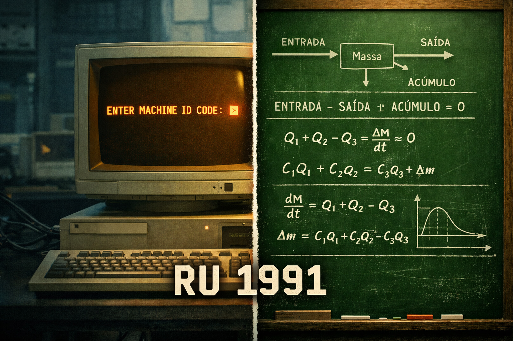

ATO II — A Camada Invisível (Adsorção)
Série RU 1991: A Essência da Soberania · Episódio 01
A física de superfície e a ocupação de sítios ativos (θ)
Em 1991 não havia simulações moleculares em 3D. O engenheiro não via a monocamada na tela; via-a na lousa, através da matemática de Langmuir. A camada invisível — aquele filme de moléculas aderidas à superfície do catalisador — era "enxergada" pela equação:
Cobertura em função da concentração e da constante de equilíbrio. Sem gráfico animado, sem render. Só o rigor do modelo.
A adsorção é o aperto de mão entre o reagente e o catalisador. O sítio ativo oferece a mão; a molécula que chega do bulk ou a ocupa ou segue adiante. Quando θ tende a 1, os sítios estão cheios: o reator "envenena", a conversão cai. Quem domina a isoterma de Langmuir domina o que acontece na interface — e, por isso, o que acontece no reator inteiro.
Legenda LinkedIn (engajamento)
Hashtags
Navegação da série (binge-reading)
Chamada · Ep.01 · Ep.02 — Ato III · Ep.03 — Ato IV · Ep.04 — Ato V · Epílogo
Contato
- E-mail: suporte@caracore.com.br
- Site: www.caracore.com.br
- LinkedIn: Cara Core Informática
Ato I — O Portal · Ato II — A Camada Invisível. Próximos atos no LinkedIn.
Seguir no LinkedIn
Artigo publicado em 15 de março de 2026
© 2026 Cara Core Informática. Todos os direitos reservados.